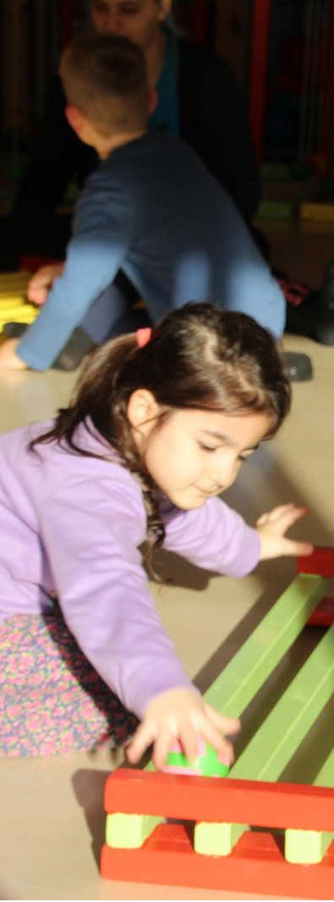

<!DOCTYPE html>
<html lang="en">
  <head>
    <meta charset="utf-8" />
    <meta name="viewport" content="width=device-width, initial-scale=1.0, maximum-scale=1.0, user-scalable=no" />

    <title></title>
    <link rel="stylesheet" href="dist/reveal.css" />
    <link rel="stylesheet" href="dist/theme/white.css" id="theme" />
    <link rel="stylesheet" href="plugin/highlight/zenburn.css" />
	<link rel="stylesheet" href="css/layout.css" />
	<link rel="stylesheet" href="plugin/customcontrols/style.css">


    <script defer src="dist/fontawesome/all.min.js"></script>

	<script type="text/javascript">
		var forgetPop = true;
		function onPopState(event) {
			if(forgetPop){
				forgetPop = false;
			} else {
				parent.postMessage(event.target.location.href, "app://obsidian.md");
			}
        }
		window.onpopstate = onPopState;
		window.onmessage = event => {
			if(event.data == "reload"){
				window.document.location.reload();
			}
			forgetPop = true;
		}

		function fitElements(){
			const itemsToFit = document.getElementsByClassName('fitText');
			for (const item in itemsToFit) {
				if (Object.hasOwnProperty.call(itemsToFit, item)) {
					var element = itemsToFit[item];
					fitElement(element,1, 1000);
					element.classList.remove('fitText');
				}
			}
		}

		function fitElement(element, start, end){

			const size = (end + start) / 2;
			element.style.fontSize = `${size}px`;

			if(Math.abs(start - end) < 1){
				return;
			}

			if(element.scrollHeight > element.offsetHeight){
				fitElement(element, start, size);
			} else {
				fitElement(element, size, end);
			}		
		}


		document.onreadystatechange = () => {
			fitElements();
			if (document.readyState === 'complete') {
				if (window.location.href.indexOf("?export") != -1){
					parent.postMessage(event.target.location.href, "app://obsidian.md");
				}
				if (window.location.href.indexOf("print-pdf") != -1){
					let stateCheck = setInterval(() => {
						clearInterval(stateCheck);
						window.print();
					}, 250);
				}
			}
	};


        </script>
  </head>
  <body>
    <div class="reveal">
      <div class="slides"><section  data-markdown><script type="text/template">
<!-- .slide: class="drop" data-background-image="Bilder/blue-abstract-gradient-wave-wallpaper.jpg" -->
<p style="line-height: 0" class="reset-paragraph"></img></p>

<p style="line-height: 0" class="reset-paragraph"></img></p>

<p style="line-height: 0" class="reset-paragraph"></img></p>

<div class="has-light-background reset-margin" style="background-color: #FFFFFF00; padding: 30px; box-sizing: border-box; position: absolute; left: 806.4px; top: 576px; height: 300px; min-height: 300px; width: 1094.3999999999999px; display: flex; flex-direction: column; align-items: flex-start; justify-content: space-evenly" align="left">

# Functional Juggling Teacher Training<!-- .element: style="font-size: 120px" -->
</div>
<div class="has-light-background reset-margin flex-even" style="background-color: #FFFFFF00; position: absolute; left: 787.1999999999999px; top: 984px; height: 180px; min-height: 180px; width: 1036.8px; display: flex; flex-direction: row; align-items: center; justify-content: space-evenly" >

# Marc Bielert<!-- .element: style="font-size: 40px" -->
# Lapo Botteri<!-- .element: style="font-size: 40px" -->
# Veronika Gallyas<!-- .element: style="font-size: 40px" -->
</div>
<div class="has-dark-background reset-margin flex-even" style="background-color: red; position: absolute; left: 844.8px; top: 1104px; height: 60px; min-height: 60px; width: 960px; display: flex; flex-direction: row; align-items: center; justify-content: space-evenly" >

# Funding through Erasmus+<!-- .element: style="font-size: 40px" -->
</div>
</script></section><section  data-markdown><script type="text/template"><!-- .slide: class="drop" data-background-image="Bilder/blue-abstract-gradient-wave-wallpaper.jpg" -->
<div class="has-light-background reset-margin" style="background-color: #FFFFFF00; padding: 60px; box-sizing: border-box; position: absolute; left: 0px; top: 0px; height: 1200px; min-height: 1200px; width: 1920px; display: flex; flex-direction: column; align-items: flex-start; justify-content: space-evenly" align="left">

# Part 1 - Introduction / Base Theory <!-- .element: style="font-size: 100px" -->
# Teil 1 - Einführung und Basistheorie <!-- .element: style="font-size: 100px; color: green" -->
</div>
</script></section><section  data-markdown><script type="text/template"><!-- .slide: class="drop" data-background-image="Bilder/blue-abstract-gradient-wave-wallpaper.jpg" -->
<p style="line-height: 0" class="reset-paragraph"></img></p>

<p style="line-height: 0" class="reset-paragraph"></img></p>

<div class="has-light-background reset-margin" style="background-color: #FFFFFF00; padding: 60px; box-sizing: border-box; position: absolute; left: 0px; top: 480px; height: 480px; min-height: 480px; width: 729.6px; display: flex; flex-direction: column; align-items: center; justify-content: space-evenly" align="justify">

# Group Introduction <!-- .element: style="font-size: 80px" -->
# Kennenlernen<!-- .element: style="font-size: 80px; color: green" -->
</div></script></section><section  data-markdown><script type="text/template"><!-- .slide: class="drop" data-background-image="Bilder/blue-abstract-gradient-wave-wallpaper.jpg" -->
<div class="has-light-background reset-margin" style="background-color: #FFFFFF00; padding: 60px; box-sizing: border-box; position: absolute; left: 0px; top: 0px; height: 240px; min-height: 240px; width: 1920px; display: flex; flex-direction: column; align-items: center; justify-content: space-evenly" align="justify">

# Course Overview: Timeline & Structure  <!-- .element: style="font-size: 80px" -->
# Kursübersicht: Zeitplan und Struktur <!-- .element: style="font-size: 80px; color: green" -->
</div>
<div class="has-light-background reset-margin" style="background-color: #FFFFFF00; padding: 60px; box-sizing: border-box; position: absolute; left: 0px; top: 240px; height: 960px; min-height: 960px; width: 1920px; display: flex; flex-direction: column; align-items: center; justify-content: space-evenly" align="justify">

- yoyo
- yoyo
- yoyo
- yoyo
- yoyo
- yoyo
- yoyo
- yoyo

</div>
</script></section><section  data-markdown><script type="text/template">
<!-- .slide: class="drop" data-background-image="Bilder/blue-abstract-gradient-wave-wallpaper.jpg" -->
<div class="has-light-background reset-margin" style="background-color: #FFFFFF00; padding: 60px; box-sizing: border-box; position: absolute; left: 0px; top: 0px; height: 1200px; min-height: 1200px; width: 1920px; display: flex; flex-direction: column; align-items: center; justify-content: space-evenly" align="justify">

# Functional Juggling - overview context, form and intention<!-- .element: style="font-size: 60px" -->
# Überblick über Kontext, Form und Absicht des funktionalen Jonglierens<!-- .element: style="font-size: 60px; color: green" -->

- Inklusiv: Jeder Mensch, egal welchen Alters oder mit welchen Einschränkungen
- Alltagsrelevante Bewegungsförderung
- Spiele ermöglichen eine hohe Zahl an Bewegungs - Wiederholungen ohne das die Motivation diese auszuführen sinkt
- Anpassbar an individuelle Ziele der Bewegungsförderung
</div>
</script></section><section  data-markdown><script type="text/template">
<!-- .slide: data-background-image="Bilder/blue-abstract-gradient-wave-wallpaper.jpg" -->
# Methode des  Functional Juggling
# Entstehung und Überblick
</script></section><section  data-markdown><script type="text/template">
<!-- .slide: class="drop" data-background-image="Bilder/blue-abstract-gradient-wave-wallpaper.jpg" -->
<p style="line-height: 0" class="reset-paragraph"></img></p>

<div class="has-dark-background reset-margin" style="background-color: #FF0000; padding: 20px; box-sizing: border-box; position: absolute; left: 960px; top: 480px; height: 600px; min-height: 600px; width: 960px; display: flex; flex-direction: column; align-items: center; justify-content: space-evenly" align="justify">

- Craig Quat
- entwickelte die Methodik ca. 2010
- zusammenarbeit mit Kliniken, Neurowissenschaftler*innen, Therapiezentren
- Gründung des “Collective”-Netzwerk in mittlerweile über 20 Ländern
</div>

<p style="line-height: 0" class="reset-paragraph"></img></p>

</script></section><section ><section data-markdown><script type="text/template">
<!-- .slide: class="drop" data-background-image="/Bilder/46514050_584083148712701_263200109909508096_n.jpg" -->

<div class="has-light-background reset-margin" style="background-color: #FFFFFF55; padding: 60px; box-sizing: border-box; filter: blur(10px); position: absolute; left: 0px; top: 960px; height: 240px; min-height: 240px; width: 960px; display: flex; flex-direction: column; align-items: center; justify-content: space-evenly" align="justify">

</div>
<div class="has-light-background reset-margin" style="background-color: #FFFFFF00; padding: 60px; box-sizing: border-box; position: absolute; left: 0px; top: 960px; height: 240px; min-height: 240px; width: 960px; display: flex; flex-direction: column; align-items: center; justify-content: space-evenly" align="justify">

# **Die Spielgeräte**
</div>
</script></section><section data-markdown><script type="text/template">
<!-- .slide: class="drop" data-background-image="Bilder/blue-abstract-gradient-wave-wallpaper.jpg" -->
<p style="line-height: 0" class="reset-paragraph"></img></p>

<p style="line-height: 0" class="reset-paragraph"></img></p>

<p style="line-height: 0" class="reset-paragraph"></img></p>

<div class="has-light-background reset-margin" style="background-color: #FFFFFF00; padding: 20px; box-sizing: border-box; position: absolute; left: 1478.3999999999999px; top: 60px; height: 456px; min-height: 456px; width: 460.79999999999995px; display: flex; flex-direction: column; align-items: center; justify-content: space-evenly" >

## **Das "Newton"**
</div>
</script></section><section data-markdown><script type="text/template">
<!-- .slide: class="drop" data-background-image="Bilder/blue-abstract-gradient-wave-wallpaper.jpg" -->
<p style="line-height: 0" class="reset-paragraph"></img></p>


<p style="line-height: 0" class="reset-paragraph"></img></p>


<p style="line-height: 0" class="reset-paragraph"></img></p>


<div class="has-light-background reset-margin" style="background-color: #FFFFFF00; padding: 20px; box-sizing: border-box; position: absolute; left: 0px; top: 780px; height: 240px; min-height: 240px; width: 1920px; display: flex; flex-direction: column; align-items: center; justify-content: space-evenly" >

# **Das Juggleboard**
</div>
</script></section></section><section  data-markdown><script type="text/template">
<!-- .slide: data-background-image="Bilder/blue-abstract-gradient-wave-wallpaper.jpg" -->
# Meaning of Juggling<!-- .element: style="font-size: 80px" -->
# Bedeutung von "Jonglieren"<!-- .element: style="font-size: 80px; color: green" -->

- subjective Expression vs. Universal Experience<!-- .element: style="font-size: 60px" -->
- Subjektiver Ausdruck vs. Universelle Erfahrung<!-- .element: style="font-size: 60px; color: green" -->
</script></section><section  data-markdown><script type="text/template">
<!-- .slide: data-background-image="Bilder/blue-abstract-gradient-wave-wallpaper.jpg" -->
# Quat Props Formula Definition of Juggling<!-- .element: style="font-size: 80px" -->
# Quat Props Formel/Definition von Jonglieren<!-- .element: style="font-size: 80px; color: green" -->
> a managed sequence of anti-entropic orbital events harmonised in space and time

.

> eine geordnete Abfolge von anti-entropischen, räumlich und zeitlich aufeinander abgestimmten orbitalen Ereignissen<!-- .element: style="color: green" --></script></section><section  data-markdown><script type="text/template">
<!-- .slide: data-background-image="Bilder/blue-abstract-gradient-wave-wallpaper.jpg" -->
# Cognitive Impacts
# Kognitive Auswirkungen<!-- .element: style="color: green" -->
- the physical movements (of juggling) stimulate specific in the brain
- die körperlichen Bewegungen (des Jonglierens) stimulieren bestimmte Bereiche des Gehirns<!-- .element: style="color: green" -->
- we look to recreate these cognitive sequences through modified movements and actions
- wir versuchen, diese kognitiven Vorgänge durch veränderte Bewegungen und Handlungen nachzubilden<!-- .element: style="color: green" -->
- several studies regarding the benefits of juggling
	- https://www.quatprops.net/research

> outcomes are determined mainly by amount of time spend in state of mind, not by technical challenge

.

> die Ergebnisse werden hauptsächlich durch die Zeit bestimmt, die man in einem geistigen Zustand verbringt, nicht durch die technische Herausforderung<!-- .element: style="color: green" -->
</script></section><section ><section data-markdown><script type="text/template">
<!-- .slide: data-background-image="Bilder/blue-abstract-gradient-wave-wallpaper.jpg" -->
# Accessibility Challenges / Mainstream Absence<!-- .element: style="font-size: 80px" -->
# Herausforderungen bei der Zugänglichkeit / Abwesenheit im Mainstream<!-- .element: style="font-size: 80px; color: green" -->
</script></section><section data-markdown><script type="text/template">
<!-- .slide: data-background-image="Bilder/blue-abstract-gradient-wave-wallpaper.jpg" -->
- despite high impact of desired outcomes, social reluctance to embrace mainstream implementation
- trotz der großen Wirkung / wünschenswerten Ergebnisse, gesellschaftliche Zurückhaltung bei der Umsetzung im Alltag<!-- .element: style="color: green" -->
- connected to misinterpreted state of lower level accassibility (not viewed as something for everyone)
- im Zusammenhang mit der (falschen) Idee der geringeren Zugänglichkeit (nicht als etwas für jedermann angesehen)<!-- .element: style="color: green" -->
</script></section><section data-markdown><script type="text/template">
<!-- .slide: data-background-image="Bilder/blue-abstract-gradient-wave-wallpaper.jpg" -->
# Discussion

- conversation about common reactions and negative perspective of learning (to juggle) with examples of how peaple respond with saying "no" or making excuses
- Gespräch über häufige Reaktionen und negative Vorstellungen vom Jonglieren lernen mit Beispielen, wie Menschen mit "Nein" oder mit Ausreden reagieren<!-- .element: style="color: green" -->
</script></section><section data-markdown><script type="text/template">
<!-- .slide: data-background-image="Bilder/blue-abstract-gradient-wave-wallpaper.jpg" -->
# so - what is missing?
# Was fehlt also?<!-- .element: style="color: green" -->
</script></section><section data-markdown><script type="text/template">
<!-- .slide: class="drop" data-background-image="Bilder/blue-abstract-gradient-wave-wallpaper.jpg" -->
<p style="line-height: 0" class="reset-paragraph"></img></p>

</script></section></section><section  data-markdown><script type="text/template">
<!-- .slide: data-background-image="Bilder/blue-abstract-gradient-wave-wallpaper.jpg" -->
# Learning Models

- Linear Learning / Scaffolding
- Lineares Lernen / Unterstützendes Lernen<!-- .element: style="color: green" -->
</script></section><section ><section data-markdown><script type="text/template">
<!-- .slide: data-background-image="Bilder/blue-abstract-gradient-wave-wallpaper.jpg" -->
# Part 2 : Five-Step Juggling<!-- .element: style="font-size: 80px" -->
# Teil 2 : Die 5 Schritte Methode<!-- .element: style="font-size: 80px; color: green" -->
- Concepts before Components
- Konzepte zuerst (Juggleboard oder Body-Juggling) / Bewegungsplanung<!-- .element: style="color: green" -->
- Sequencing Capacity (Cow jumps over the moon)
- Sequenzierungskapazität erhöhen (Die Kuh springt über den Mond)<!-- .element: style="color: green" -->
- Traditional Method of Teaching 3 Balls
- Traditionelle Lernmethode für 3 Bälle<!-- .element: style="color: green" -->
</script></section><section data-markdown><script type="text/template">
<!-- .slide: data-background-image="Bilder/blue-abstract-gradient-wave-wallpaper.jpg" -->
# Step 1: Concepts before Components<!-- .element: style="font-size: 80px" -->
# Schritt 1 : Konzepte zuerst<!-- .element: style="font-size: 80px; color: green" -->
- Body Juggling (Floor / Shoulder / Under Arm / Elbow)

> reduces anciety and increase motivation through accessible challenge, insured success and perception of diverse skill development

.

>Abbau von Ängsten und Steigerung der Motivation durch leicht zugängliche Herausforderungen, gesicherte Erfolge und die Wahrnehmung der Entwicklung verschiedener Fähigkeiten<!-- .element: style="color: green" -->
</script></section><section data-markdown><script type="text/template">
<!-- .slide: data-background-image="Bilder/blue-abstract-gradient-wave-wallpaper.jpg" -->
# Step 2: Sequencing Capacity<!-- .element: style="font-size: 80px" -->
# Schritt 2 : Bewegungsplanung<!-- .element: style="font-size: 80px; color: green" -->

### "The cow jumps over the moon"
- developing cognitive sequencing capacities through narrative based playful instructions
- 312 (Siteswap) exercises (over the moon, through the moon)
- lateral column throws (out and in of the barn)
- bi-lateral cascade sequencing (between the barns)
</script></section><section data-markdown><script type="text/template">
<!-- .slide: data-background-image="Bilder/blue-abstract-gradient-wave-wallpaper.jpg" -->
# Step 3,4,5 : Traditional Technic<!-- .element: style="font-size: 80px" -->
# Schritt 3,4,5 : Klassische Methode<!-- .element: style="font-size: 80px; color: green" -->

- use your personal method of training
- possible to move faster through the process as much of the capacities have already been developed
</script></section></section><section ><section data-markdown><script type="text/template">
<!-- .slide: data-background-image="Bilder/blue-abstract-gradient-wave-wallpaper.jpg" -->
# Part 3 : Process formations of juggling sequencing capacities<!-- .element: style="font-size: 80px" -->
# Teil 3 : Bewegungssequenzen<!-- .element: style="font-size: 80px; color: green" -->
</script></section><section data-markdown><script type="text/template">
<!-- .slide: data-background-image="Bilder/blue-abstract-gradient-wave-wallpaper.jpg" -->
# Reflection / Discussion<!-- .element: style="font-size: 80px" -->
# Reflektion / Diskussion<!-- .element: style="font-size: 80px; color: green" -->

- Reflect back on accessibility of toss juggling.
- Reflektiere nochmal die Zugänglichkeit der Wurfjonglage.<!-- .element: style="color: green" -->
- 5step method improves accessibility outcome of traditional toss juggling
- Die 5-Stufen-Methode verbessert das Ergebnis der Zugänglichkeit der traditionellen Wurfjonglage<!-- .element: style="color: green" -->
- toss juggling still excludes large amounts functionally diverse populations from access
- Die Wurfjonglage schließt immer noch große Mengen funktionell unterschiedlicher Bevölkerungsgruppen vom Zugang aus.<!-- .element: style="color: green" -->
</script></section><section data-markdown><script type="text/template">
<!-- .slide: data-background-image="Bilder/blue-abstract-gradient-wave-wallpaper.jpg" -->
# How do we change / resolve this inequality ?<!-- .element: style="font-size: 80px" -->
# Wie können wir diese Ungleichheit ändern?<!-- .element: style="font-size: 80px; color: green" -->

- we must evaluate the internal experiential conditions produced by traditional juggling
- Wir müssen die internen empirischen Bedingungen bewerten, die durch das traditionelle Jonglieren erzeugt werden.<!-- .element: style="color: green" -->
- analysing unique structures of the neurological communication signals triggered by set structures of coordinated bi-lateral movements
- Analyse der neurologischen Kommunikationssignale, die durch die festgelegten Muster der koordinierten beidseitigen Bewegungen ausgelöst werden<!-- .element: style="color: green" -->
- given our understanding that juggling benefits are not associated with individual skill level but instead by the time spend in the state of condition of juggling
- die Vorteile des Jonglierens sind nicht mit dem individuellen Fähigkeitsniveau verbunden, sondern mit der Zeit, die im Zustand des Jonglierens verbracht wird<!-- .element: style="color: green" -->
- this leads us to adapt our model of developmental progressions by a new standard of cognitive sequencing capacity
- Dies führt uns dazu, unser Modell der Fortschritte in der Entwicklung durch einen neuen Standard der kognitiven Sequenzierungskapazität anzupassen<!-- .element: style="color: green" -->
</script></section></section><section ><section data-markdown><script type="text/template">
<!-- .slide: data-background-image="Bilder/blue-abstract-gradient-wave-wallpaper.jpg" -->
# How does movement work?<!-- .element: style="font-size: 80px" -->
# Wie funktioniert Bewegung?<!-- .element: style="font-size: 80px; color: green" -->
</script></section><section data-markdown><script type="text/template">
<!-- .slide: data-background-image="Bilder/blue-abstract-gradient-wave-wallpaper.jpg" -->
# Binary Forms<!-- .element: style="font-size: 80px" -->
# Binäre Formen<!-- .element: style="font-size: 80px; color: green" -->

- for starters, the human body and brain are binary meaning that they consist of two halves: a left side and a right side. 
- Zunächst einmal sind der menschliche Körper und das Gehirn binär, das heißt, sie bestehen aus zwei Hälften: einer linken und einer rechten Seite.<!-- .element: style="color: green" -->
- Each side is symmetric and mirrors that of the other, with the left side of the brain controlling the right side of the body, and vice versa.
- Jede Seite ist symmetrisch und spiegelt die der anderen, wobei die linke Seite des Gehirns die rechte Seite des Körpers steuert und umgekehrt.<!-- .element: style="color: green" -->

<p style="line-height: 0" class="reset-paragraph"></img></p>

</script></section><section data-markdown><script type="text/template">
# Corpus Callosum

<!-- .slide: data-background-image="Bilder/blue-abstract-gradient-wave-wallpaper.jpg" -->
- Sensory information received from one side of the body is always processed first in the corresponding (opposite) side of the brain.
- Sensorische Informationen, die von einer Seite des Körpers empfangen werden, werden immer zuerst in der entsprechenden (gegenüberliegenden) Seite des Gehirns verarbeitet.<!-- .element: style="color: green" -->
- Applying this dichotomy to the anatomy of our brain requires a discussion of a specific region known as the corpus callosum.
- Die Anwendung dieser Zweiteilung auf die Anatomie unseres Gehirns erfordert eine Diskussion über eine bestimmte Region, die als Corpus callosum bekannt ist.<!-- .element: style="color: green" -->
- This structure is responsible for the communication of information between the two hemispheres of the brain.
- Diese Struktur ist für die Kommunikation von Informationen zwischen den beiden Gehirnhälften verantwortlich.<!-- .element: style="color: green" -->

<p style="line-height: 0" class="reset-paragraph"></img></p>

</script></section><section data-markdown><script type="text/template">
<!-- .slide: data-background-image="Bilder/blue-abstract-gradient-wave-wallpaper.jpg" -->
- Whenever something is experienced by one side of the body, sensory information about that experience must be communicated (first) to the corresponding side of the brain.
- Wann immer etwas von der einen Seite des Körpers erlebt wird, muss die sensorische Information über diese Erfahrung (zuerst) an die entsprechende Seite des Gehirns übermittelt werden.<!-- .element: style="color: green" -->
- Depending on the outcome of the interaction, the information about the experience must now be communicated in one of two directions: laterally or bilaterally.
- Je nach dem Ergebnis der Interaktion muss die Information über die Erfahrung nun in eine von zwei Richtungen kommuniziert werden: lateral oder bilateral.<!-- .element: style="color: green" -->

### Lateral
<p style="line-height: 0" class="reset-paragraph"></img></p>

### Bilateral
<p style="line-height: 0" class="reset-paragraph"></img></p>

</script></section></section><section  data-markdown><script type="text/template">
# Practice

- facilitate activity of associated process formation with 2 beanbags
- folgende einfachen Bewegungssequenzen mit 2 Bällen ausprobieren

- Synchronous Lateral
- Asynchronous Lateral
- Synchronous Bi-Lateral
- Asynchronous Bi-Lateral

> Note that for bilateral synchronous it works better to cross the arms instead of the objects. 

.

> Beachte, dass es bei "bilateraler synchroner" Bewegung erst einmal einfacher ist, die Arme statt der Objekte zu kreuzen. 
</script></section><section ><section data-markdown><script type="text/template"><!-- .slide: data-background-image="Bilder/blue-abstract-gradient-wave-wallpaper.jpg" -->
# Theorie der “Process Formations”
- The theory of "Process Formations" is a tabular listing that combines and shows all the possible combinations of our (binary) interactions with space and time.
- Die Theorie der “Process Formations” ist eine tabellarische Auflistung, die die gesamten möglichen Kombinationen unserer (binären) Interaktionen mit Raum und Zeit kombiniert und aufzeigt.

# Space / Raum 
- Lateral
- Bilateral

# Time / Zeit
- Synchronous / Synchron
- Asynchronous / Asynchron

# Signal / Signal
- Associated / Assoziiert
- Dissociated / Dissoziiert
</script></section><section data-markdown><script type="text/template">
<!-- .slide: data-background-image="Bilder/blue-abstract-gradient-wave-wallpaper.jpg" -->
# Zeit (Synchron)
Wenn die Frequenz der Interaktion gespiegelt oder geteilt wird zwischen beiden Seiten unseres Gehirns.

Dies geschieht immer dann, wenn Interaktionen von beiden Seiten beiden Seiten gleichzeitig initiiert werden, wie wie zum Beispiel das seitliche Werfen und Fangen von zwei Bällen zur zur gleichen Zeit.

<p style="line-height: 0" class="reset-paragraph"></img></p>

</script></section><section data-markdown><script type="text/template">
<!-- .slide: data-background-image="Bilder/blue-abstract-gradient-wave-wallpaper.jpg" -->
# Zeit (Asynchron)

Eine asynchrone Beziehung zur Zeit bedeutet, dass die Interaktionen immer abwechselnd zwischen den beiden Gehirnhälften hinund herwechseln muss.

Ein Beispiel dafür wäre das gleiche seitliche Werfen und Fangen von zwei Bällen, aber zu unterschiedlichen Zeiten.

<p style="line-height: 0" class="reset-paragraph"></img></p>

</script></section><section data-markdown><script type="text/template">
<!-- .slide: data-background-image="Bilder/blue-abstract-gradient-wave-wallpaper.jpg" -->
# Raum (lateral)

Eine laterale Beziehung zum Raum bedeutet, dass die Informationen nicht zwischen den beiden Großhirnhälften unseres Gehirns kreuzen müssen. Dies geschieht immer dann, wenn eine Interaktion auf einer Seite des Körpers stattfindet, die das Erleben der anderen Seite nicht beeinflusst.

<p style="line-height: 0" class="reset-paragraph"></img></p>

</script></section><section data-markdown><script type="text/template">
<!-- .slide: data-background-image="Bilder/blue-abstract-gradient-wave-wallpaper.jpg" -->
# Raum (bilateral)

Bilaterale Ordnungsbeziehungen mit dem Raum erfordern, dass ihre Informationen zwischen den beiden Seiten unseres Gehirns kommuniziert werden, und es gibt mehrere Möglichkeiten, diese Arten von Interaktionen auszulösen oder zu unterteilen.

Dazu gehören Ordnungsfaktoren, die sich auf den Austausch von **Objekten, Orten und Geometrien** beziehen.

<p style="line-height: 0" class="reset-paragraph"></img></p>

</script></section><section data-markdown><script type="text/template">
<!-- .slide: data-background-image="Bilder/blue-abstract-gradient-wave-wallpaper.jpg" -->
# Signal (assoziiert)
Assoziierte Beziehungen mit Signalen treten immer dann auf, wenn beide Seiten des Körpers identische Beziehungen zum Raum ausdrücken. Ein Beispiel hierfür wäre das Werfen von Bällen zwischen zwei Händen, wobei eine identische Technik verwendet wird, um den Ausdruck beider Seiten zu steuern.
<p style="line-height: 0" class="reset-paragraph"></img></p>

</script></section><section data-markdown><script type="text/template">
<!-- .slide: data-background-image="Bilder/blue-abstract-gradient-wave-wallpaper.jpg" -->
# Signal (dissoziiert)

Disassoziierte Beziehungen mit Signalen treten immer dann auf, wenn eine Seite des Körpers eine andere Interaktion mit dem Raum erfährt als die andere.

<p style="line-height: 0" class="reset-paragraph"></img></p>

</script></section><section data-markdown><script type="text/template">
<!-- .slide: class="drop" data-background-image="Bilder/blue-abstract-gradient-wave-wallpaper.jpg" -->
<div class="has-light-background reset-margin" style="background-color: #AAAAAA60; padding: 0px; box-sizing: border-box; position: absolute; left: 384px; top: 240px; height: 240px; min-height: 240px; width: 576px; display: flex; flex-direction: column; align-items: center; justify-content: space-evenly" align="justify">

Synchron<br>Lateral
</div>

<div class="has-light-background reset-margin" style="background-color: #AAAAAA60; padding: 0px; box-sizing: border-box; position: absolute; left: 384px; top: 600px; height: 240px; min-height: 240px; width: 576px; display: flex; flex-direction: column; align-items: center; justify-content: space-evenly" align="justify">

Synchron<br>BiLateral
</div>

<div class="has-light-background reset-margin" style="background-color: #AAAAAA60; padding: 0px; box-sizing: border-box; position: absolute; left: 998.4px; top: 240px; height: 240px; min-height: 240px; width: 576px; display: flex; flex-direction: column; align-items: center; justify-content: space-evenly" align="justify">

Asynchron<br>Lateral
</div>

<div class="has-light-background reset-margin" style="background-color: #AAAAAA60; padding: 0px; box-sizing: border-box; position: absolute; left: 998.4px; top: 600px; height: 240px; min-height: 240px; width: 576px; display: flex; flex-direction: column; align-items: center; justify-content: space-evenly" align="justify">

Asynchron<br>BiLateral
</div>

<div class="has-light-background reset-margin" style="background-color: #FFFFFF00; padding: 0px; box-sizing: border-box; position: absolute; left: 384px; top: 96px; height: 120px; min-height: 120px; width: 576px; display: flex; flex-direction: column; align-items: center; justify-content: space-evenly" align="justify">

## Synchron
</div>

<div class="has-light-background reset-margin" style="background-color: #FFFFFF00; padding: 0px; box-sizing: border-box; position: absolute; left: 998.4px; top: 96px; height: 120px; min-height: 120px; width: 576px; display: flex; flex-direction: column; align-items: center; justify-content: space-evenly" align="justify">

## ASynchron
</div>
</script></section></section><section  data-markdown><script type="text/template">
<!-- .slide: data-background-image="Bilder/blue-abstract-gradient-wave-wallpaper.jpg" -->
# Modelled Sequence Activities 
# Modellierte Abläufe
</script></section><section  data-markdown><script type="text/template">
<!-- .slide: data-background-image="Bilder/blue-abstract-gradient-wave-wallpaper.jpg" -->
Time | Space | Signal
---|---|---
Synchron | Lateral | Assoziiert
Asynchron | Lateral | Assoziiert
Synchron | Bilateral | Assoziiert
Asynchron | Bilateral | Assoziiert
Synchron | Lateral | Dissoziiert
Asynchron | Lateral | Dissoziiert
Synchron | Bilateral | Dissoziiert
Asynchron | Bilateral | Dissoziiert
</script></section><section  data-markdown><script type="text/template">
<!-- .slide: data-background-image="Bilder/blue-abstract-gradient-wave-wallpaper.jpg" -->
# Übung

Führen Sie die folgenden Sequenzen, die der Kursleiter zufällig aufruft, nur mit Klopfbewegungen aus.
</script></section><section  data-markdown><script type="text/template">
<!-- .slide: data-background-image="Bilder/blue-abstract-gradient-wave-wallpaper.jpg" -->
# Statische vs Dynamische Interaktionen
</script></section><section  data-markdown><script type="text/template">
<!-- .slide: data-background-image="Bilder/blue-abstract-gradient-wave-wallpaper.jpg" -->
# Statische Interaktionen

Viele Interaktion erfordern keine eigenständige Bewegung der Objekte. Wir bezeichnen diese Arten von Interaktionen als statisch. Wir können diese Erfahrungen als eine Möglichkeit nutzen, um die Funktionalität in vielen bestehenden Aktivitäten zu variieren und angemessen zu gestalten.

Statische Interaktionen können als solche betrachtet werden, die keine eigenständige Bewegung der Objekte durch den Raum beinhalten und daher keine sensorische Rückmeldung über ihre Umgebung haben.
</script></section><section  data-markdown><script type="text/template">
<!-- .slide: data-background-image="Bilder/blue-abstract-gradient-wave-wallpaper.jpg" -->
# Dynamische Interaktionen

Dynamische Interaktionen sind alle Interaktionen, die die sensorische Verarbeitung von externen Bewegungen durch den Raum beinhalten.

Diese Formen der Interaktion enthalten sensorische Feedback-Informationen über ihre Umgebung, die benötigt werden, um unsere Beziehung zu ihr harmonisieren zu können.
</script></section><section ><section data-markdown><script type="text/template">
<!-- .slide: data-background-image="Bilder/blue-abstract-gradient-wave-wallpaper.jpg" -->
# Funktionale Integration

Indem wir die Beziehungen der Theorie der "Process Formations" nutzen und dann gemischte Formen von statischen/dynamischen Interaktionen einbeziehen, sind wir in der Lage, die verbrachte Zeit mit der Aufgabe und die Wiederholungsanzahl jeder Aktivität zu erhöhen.

Indem wir die Aktivitäten durch etwas wie z.B. das Ausgießen von Bechern mit Wasser oder das Malen mit Buntstiften ersetzen, verwandeln wir die positiven Ergebnisse des Jonglierens in ein völlig neues Feld der therapeutischen Praxis.

Außerdem eignet sich diese Struktur des Spiels leicht für nonverbale Kommunikationsstrategien, was eine entscheidende Rolle bei der Sicherstellung der Zugänglichkeit für jeden Menschen spielt.
</script></section><section data-markdown><script type="text/template">
<!-- .slide: data-background-image="Bilder/blue-abstract-gradient-wave-wallpaper.jpg" -->
<iframe width="800" height="500" src="https://www.youtube.com/embed/zFPsr1L13Vs" title="YouTube video player" frameborder="0" allow="accelerometer; autoplay; clipboard-write; encrypted-media; gyroscope; picture-in-picture" allowfullscreen></iframe>
</script></section></section><section  data-markdown><script type="text/template">
<!-- .slide: data-background-image="Bilder/blue-abstract-gradient-wave-wallpaper.jpg" -->
# Übung

Beginnend mit der Absicht, die Erfahrung des Jonglieren zu nutzen, um die verbrachte Zeit für eine Bewegungs-Aufgabe und die Zahl der Wiederholungen zu verbessern, experimentieren und erforschen Sie neue Aktivitäten mit alltäglichen Objekten.  Orientieren Sie sich dabei an der Theorie der “Process Formations”
(Nur statische Interaktionen / Bonus für narratives Spiel)
</script></section><section ><section data-markdown><script type="text/template">
<!-- .slide: data-background-image="Bilder/blue-abstract-gradient-wave-wallpaper.jpg" -->
# Karte der räumlichen Anordnung

<p style="line-height: 0" class="reset-paragraph"></img></p>


Die Karten der räumlichen Anordnung sollen angeben, wo und wann unsere Interaktionen mit dem Raum stattfinden, legen aber nichts über die Art und Weise fest, in der sie durchgeführt werden müssen.
</script></section><section data-markdown><script type="text/template">
<!-- .slide: data-background-image="Bilder/blue-abstract-gradient-wave-wallpaper.jpg" -->
# Angewandtes Modell

<p style="line-height: 0" class="reset-paragraph"></img></p>


Räumliche Sequenzierungskarten können aus einer beliebigen Anzahl von Punkten bestehen; die kleinste Menge, die benötigt wird, um unser gesamtes Spektrum an binären Beziehungen anregen zu können, ist jedoch Fünf.
</script></section><section data-markdown><script type="text/template">
<!-- .slide: data-background-image="Bilder/blue-abstract-gradient-wave-wallpaper.jpg" -->
Meistens werden diese Punkte zur Vereinfachung in einer horizontalen Ebene angeordnet, um ihre Interaktion leichter zugänglich zu machen. Es ist jedoch auch denkbar, sie in beliebiger Reihenfolge nach Höhe (y), Tiefe (z) oder Breite (x) anzuordnen.

<p style="line-height: 0" class="reset-paragraph"></img></p>


<p style="line-height: 0" class="reset-paragraph"></img></p>

</script></section><section data-markdown><script type="text/template">
<!-- .slide: data-background-image="Bilder/blue-abstract-gradient-wave-wallpaper.jpg" -->
x-Achse
<p style="line-height: 0" class="reset-paragraph"></img></p>


y-Achse
<p style="line-height: 0" class="reset-paragraph"></img></p>


Z-Achse
<p style="line-height: 0" class="reset-paragraph"></img></p>


Mehrere Achsen
<p style="line-height: 0" class="reset-paragraph"></img></p>

</script></section><section data-markdown><script type="text/template">
<!-- .slide: data-background-image="Bilder/blue-abstract-gradient-wave-wallpaper.jpg" -->
# Übung
  
Experimentieren Sie mit 5 entlang der x-Achse angeordneten Berührungspunkten und erkunden Sie die verschiedenen Sequenzierungsmöglichkeiten dieser Anordnung. Verwenden Sie nur statische Bewegungen für Ihre Interaktionen, und suchen Sie nach so vielen synchronen lateralen Sequenzierungskombinationen, wie Sie finden können.

Nachdem Sie mit einigen dieser Sequenzen gespielt haben, versuchen Sie, die Theorie der “Process Formations” auf diese Muster anzuwenden:

| 1   | 2  |  3  | 4
| --- | --- | --- |---
Synchron | Asynchron | Synchron| Asynchron  
Lateral | Lateral| Bilateral | Bilateral
</script></section></section><section  data-markdown><script type="text/template">
<!-- .slide: data-background-image="Bilder/blue-abstract-gradient-wave-wallpaper.jpg" -->
# Das Juggleboard

Das Juggleboard ist eine Möglichkeit, die Konzepte einer fünf Punkte umfassenden räumlichen Anordnung darzustellen; es ist jedoch nicht die einzige Möglichkeit, die wir haben, um solche Umgebungen zu realisieren. Obwohl wir hauptsächlich mit diesem Gerät arbeiten werden, ist es gut zu wissen, dass diese Konzepte selbst nicht exklusiv für ein Gerät sind, sondern vielmehr übertragbar sein sollen.

<p style="line-height: 0" class="reset-paragraph"></img></p>

</script></section><section  data-markdown><script type="text/template">
<!-- .slide: data-background-image="Bilder/blue-abstract-gradient-wave-wallpaper.jpg" -->
# Prop Swap Notation

Propswap ist ein geordnetes Notationssystem, das es uns erlaubt, die verschiedenen Sequenzierungsaktivitäten zu beschreiben

Die Notation funktioniert durch die Zuweisung von ganzen Zahlen zu jedem der fünf räumlichen Punkte unserer Anordnung.

Jede Zahl steht für eine neue Interaktion, und nimmt an, dass immer abwechselnd mit der rechten und der linken Körperseite interagiert wird.

<p style="line-height: 0" class="reset-paragraph"></img></p>

</script></section><section ><section data-markdown><script type="text/template">
<!-- .slide: data-background-image="Bilder/blue-abstract-gradient-wave-wallpaper.jpg" -->
# Juggleboard - Theorie und Notation

****

****

****
</script></section><section data-markdown><script type="text/template">
<!-- .slide: data-background-image="Bilder/blue-abstract-gradient-wave-wallpaper.jpg" -->
****
</script></section><section data-markdown><script type="text/template">
<!-- .slide: data-background-image="Bilder/blue-abstract-gradient-wave-wallpaper.jpg" -->
****
</script></section><section data-markdown><script type="text/template">
<!-- .slide: data-background-image="Bilder/blue-abstract-gradient-wave-wallpaper.jpg" -->
****
</script></section><section data-markdown><script type="text/template">
<!-- .slide: data-background-image="Bilder/blue-abstract-gradient-wave-wallpaper.jpg" -->
****
</script></section></section><section  data-markdown><script type="text/template">
<!-- .slide: data-background-image="Bilder/blue-abstract-gradient-wave-wallpaper.jpg" -->
# Übung

Nehmen Sie fünf alltägliche Objekte, ordnen sie diese auf 5-Punkten an und erschaffen Sie eine Sequenz von Bewegungen auf Basis der Prop-Swap Notation.

Interaktionen können entweder durch statische, dynamische oder kombinierte Variationen von beidem gebildet werden.

Choreographieren Sie eine personalisierte Sequenz verschiedener Muster und notieren Sie anschließend Ihre Komposition mit Propswap.
</script></section><section  data-markdown><script type="text/template">
<!-- .slide: data-background-image="Bilder/blue-abstract-gradient-wave-wallpaper.jpg" -->
# Zone der proximalen Entwicklung

****
</script></section><section ><section data-markdown><script type="text/template">
<!-- .slide: data-background-image="Bilder/blue-abstract-gradient-wave-wallpaper.jpg" -->
# Soziale Aktivität

Zu Beginn wird das Juggleboard waagerecht aufgestellt, so dass die Teilnehmer einen Ball hin und her rollen.

Nun imitieren wir diese Bewegung auf unserer Seite des Boards. Dabei ermutigen wir sie bewusst und unbewusst, uns nachahmen zu wollen, und hier beginnt unser neuer Kommunikationsstil mit ihnen.

****
</script></section><section data-markdown><script type="text/template">
<!-- .slide: data-background-image="Bilder/blue-abstract-gradient-wave-wallpaper.jpg" -->
Anfänglich ist es üblich, dass die Teilnehmer eher auf ihre Hände als auf uns schauen. Bevor wir also in der Lage sind, ihr Verhalten sozial zu beeinflussen, müssen wir zuerst ein gewisses Maß an Blickkontakt mit ihnen herstellen.

Wir lösen diese Reaktion aus, indem wir eine Eröffnungssequenz von Verhaltensweisen anwenden, die absichtlich so gestaltet sind, dass sie zu mehr sozialer Interaktion anregen, die Spielprinzipien etablieren und einen konsistenten Blickkontakt mit jedem unserer Teilnehmer entwickeln.

****

****
</script></section></section><section  data-markdown><script type="text/template">
<!-- .slide: data-background-image="Bilder/blue-abstract-gradient-wave-wallpaper.jpg" -->
Erinnerung:

Video 1

Video 2
</script></section><section  data-markdown><script type="text/template">
<!-- .slide: data-background-image="Bilder/blue-abstract-gradient-wave-wallpaper.jpg" -->
****

Marc Bielert
EigenArts-Halle
[kontakt@eigenarts-halle.de](mailto:kontakt@eigenarts-halle.de)
0160 - 189 32 70
</script></section></div>
    </div>

    <script src="dist/reveal.js"></script>

    <script src="plugin/markdown/markdown.js"></script>
    <script src="plugin/highlight/highlight.js"></script>
    <script src="plugin/zoom/zoom.js"></script>
    <script src="plugin/notes/notes.js"></script>
    <script src="plugin/math/math.js"></script>
	<script src="plugin/mermaid/mermaid.js"></script>
	<script src="plugin/menu/menu.js"></script>
	<script src="plugin/customcontrols/plugin.js"></script>

    <script>
      function extend() {
        var target = {};
        for (var i = 0; i < arguments.length; i++) {
          var source = arguments[i];
          for (var key in source) {
            if (source.hasOwnProperty(key)) {
              target[key] = source[key];
            }
          }
        }
        return target;
      }

      // default options to init reveal.js
      var defaultOptions = {
        controls: true,
        progress: true,
        history: true,
        center: true,
        transition: 'default', // none/fade/slide/convex/concave/zoom
        plugins: [
          RevealMarkdown,
          RevealHighlight,
          RevealZoom,
          RevealNotes,
          RevealMath.MathJax3,
		  RevealMermaid,
		  RevealCustomControls,
		  RevealMenu,
        ],

		mathjax3: {
			mathjax: 'plugin/math/mathjax/tex-mml-chtml.js',
		},

		customcontrols: {
			controls: [
			]
		},
		menu: {
			loadIcons: false
		}
      };

      // options from URL query string
      var queryOptions = Reveal().getQueryHash() || {};

      var options = extend(defaultOptions, {"width":1920,"height":1200,"margin":0,"controls":true,"progress":true,"slideNumber":true,"navigationMode":"default","transition":"slide","transitionSpeed":"slow"}, queryOptions);
    </script>

    <script>
      Reveal.initialize(options);
    </script>
  </body>
</html>
